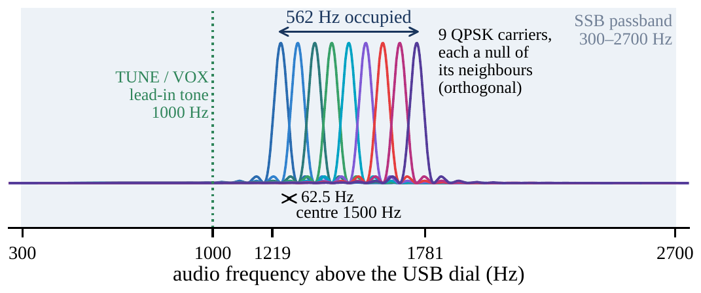
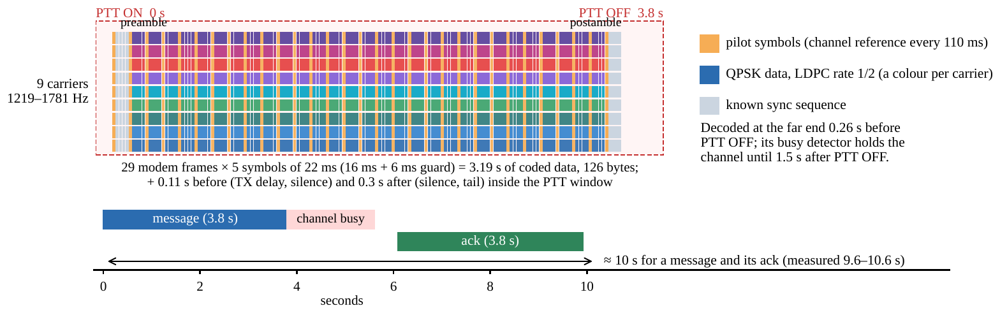
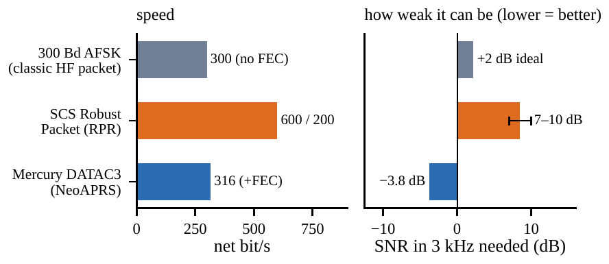

One-page summary · 5 November 2026
APRS over HF with the Mercury modem
What the HF radio of NeoAPRS puts on the air, how fast it is, and how it shares one frequency
NeoAPRS is an open-source APRS client for Windows, macOS, Linux and the Raspberry Pi. Besides the usual VHF KISS TNC it has an HF radio: an SSB transceiver with a sound card, driven by Rhizomatica’s Mercury modem, which NeoAPRS builds in, starts and supervises. Ordinary AX.25 APRS frames (positions, messages with acks, objects, bulletins) go out in DATAC3, a coherent OFDM data mode from the FreeDV/codec2 project with strong LDPC error correction. It replaces the uncoded 300-baud AFSK that HF APRS has used since the 1990s.
The signal: 9 carriers in 562 Hz

On a USB dial of 7.0541 MHz the signal sits at 7.05532–7.05588 MHz RF. Each carrier sends one QPSK symbol per 22 ms. The 6-ms guard (cyclic prefix) absorbs multipath echoes up to 6 ms, and the pilots let the receiver follow fading and phase.
Key numbers
| Modem | Mercury 1.9.21 (Rhizomatica), built in |
|---|---|
| Mode | DATAC3, the same for every station |
| Carriers | 9 × QPSK, 62.5 Hz apart, 1219–1781 Hz audio |
| Symbol | 16 ms + 6 ms guard = 22 ms (45.5 Bd per carrier) |
| Pilots | one row every 110 ms: channel reference |
| FEC | LDPC (2048, 1024), rate 1/2, + CRC-16 |
| Frame | 126 bytes, 123 for the APRS frame |
| Time on air | 3.8 s per frame, always (padded) |
| Speed | 316 bit/s payload (321 with CRC); ≈259 bit/s of APRS per air second |
| Weakest | decodes to −4 dB SNR in 3 kHz (AWGN); 78 % at 0 dB on a CCIR-poor fading channel |
| Tolerance | ±50 Hz between the two radios |
| Crest factor | 6.7 dB (clipped OFDM) |
One transmission: 3.8 s from PTT ON to PTT OFF

- Orange: pilot symbols (channel reference every 110 ms)
- Colours: QPSK data, LDPC rate 1/2 (a colour per carrier)
- Grey: known sync sequence
Decoded at the far end 0.26 s before PTT OFF; its busy detector holds the channel until 1.5 s after PTT OFF.
On the time line, in seconds: message (3.8 s), channel busy, ack (3.8 s). ≈ 10 s for a message and its ack (measured 9.6–10.6 s).
How NeoAPRS uses it
- Built in. Mercury comes inside every NeoAPRS download and listens on this computer only (KISS over TCP). There is nothing else to install.
- Direct only. No path and no digipeating on HF: every station on the frequency hears every frame directly.
- Fits one frame. An APRS frame is at most 123 bytes. A full 67-character message is 100 bytes, and comments are shortened to fit.
- Listens before it talks. Own frames wait while a signal as wide as a frame is on the channel (read from the modem’s spectrum, 20 times a second), for at most 20 s.
- Acks after the channel clears. A message and its ack take about 10 s. Retries come at 32, 64 and 128 s, plus a random 0–20 s on HF so that two colliding stations do not collide again.
- Calm beacons. At least 30 min between beacons, plus a random 0–300 s, so that fixed stations do not stay in step. That keeps beacon loss to 1–3 % with two to five stations.
- Two radios, one map. FM and HF stations share one map and one message list, and you pick the radio for each station. The Dummy HF radio lets you try it all without transmitting.
Compared with other HF APRS modes

| mode | speed net bit/s | how weak it can be (lower = better) SNR in 3 kHz needed (dB) |
|---|---|---|
| 300 Bd AFSK (classic HF packet) | 300 (no FEC) | +2 dB ideal |
| SCS Robust Packet (RPR) | 600 / 200 | 7–10 dB |
| Mercury DATAC3 (NeoAPRS) | 316 (+FEC) | −3.8 dB |
300 Bd: ideal non-coherent FSK, AWGN, 100-byte frame, 90 % delivery; real HF multipath is far worse, since a 3.3-ms symbol meets echoes of 2 ms. RPR: vendor’s typical figure, SCS hardware only. DATAC3: measured with the codec2 tools of the Mercury source, AWGN, 99 % of frames delivered.
First test on the air, 4 November 2026. OH2GBA and OH2GAX, 40.8 km apart on 6 m (50.620 MHz USB), about 20 minutes. All 21 messages were delivered, 19 on the first attempt. A frame sent with 1 W was decoded at −3 dB SNR, and no frame was lost to two stations transmitting at once. 6 m is not skywave: tests on 40 m and 20 m come next.
Getting on the air
- Radio: any SSB transceiver with a USB sound card or interface (the radio’s own USB audio, a DigiRig, a SignaLink). Keying by RTS or DTR, a CM108 GPIO, or VOX (a 150-ms tone before each frame wakes the VOX).
- Dial, USB: 7.0541 MHz (40 m), 14.1070 MHz (20 m), 10.1462 MHz (30 m), 50.620 MHz (6 m). These are proposals until confirmed on the air.
- Levels: use Tune (1 kHz) and Transmit level so that the ALC does not move.
- Receive: the normal SSB filter (1.8 kHz or wider), not a narrow data filter.
- Frequency: both radios within ±50 Hz; on 6 m that is about 1 ppm, so a TCXO helps.
- Report back: band, distance, power and what worked, to neoaprs@oh2gba.eu or on GitHub.
More detail: the technical note APRS over HF with the Mercury Modem (v1.0). Mercury by Rhizomatica (HERMES project, GPL-3); DATAC modes and LDPC codes by David Rowe and the FreeDV/codec2 contributors. NeoAPRS: GPL-3.0-or-later, https://neo.oh2gba.eu.